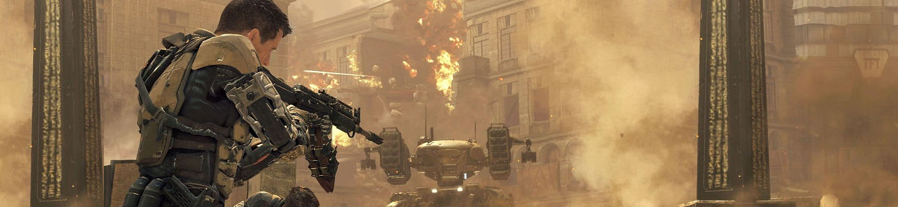

The Shooter genre is one of the most popular genres today with millions of players every day.
What is the Shooter genre?
What is the Shooter genre?
In shooter games (or simply shooters), players use ranged weapons to participate in the action, which takes place at a distance. Most shooters involve violent gameplay; lethal weaponry is used to damage opponents. However, some shooters, such as Splatoon, have non-violent objectives.
Shooters, aside from subgenre classifications, can be further classified by their perspective of play. First person shooters are played within the protagonist’s perspective; they often include a heads-up display displaying key information such as the current health of the protagonist. In third-person-shooters, the protagonist's body can be seen fully; the environment is rendered from a distance. Some shooters incorporate both perspectives. Since the 1990s, shooters, most notably first-person shooters, have become widely successful in video gaming, accounting for a large percentage of video game sales.